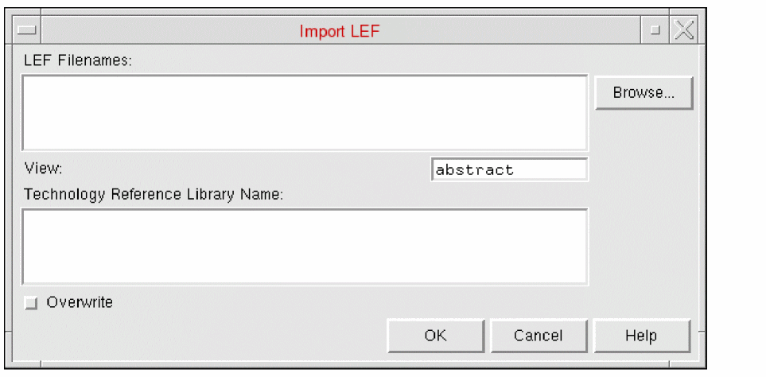
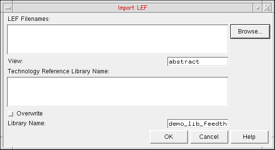

Importing LEF in Abstract Generator
The Import LEF form lets you create cellviews from LEF data. This is used when creating blocks from DEF. The LEF data for the leaf cells should be imported, followed by the DEF data for the associated block.
-
Selecting File – Import – LEF displays the Import LEF form.
 -
The LEF Filenames field specifies the LEF files to import. You can type the name manually in the field or Browse for existing files with the
.lefextension in the current directory. -
The View field specifies the cellview to which a LEF macro will be saved. The default view is
abstractbut this can be changed so that the LEF macro is saved to another view, such as thelayoutview. -
The subsection
techControl, added to the technology file for incremental technology database support, necessitates the specification of a set of ordered reference libraries to allow inheritance from these libraries.
Abstract Generator allows you to specify one or more valid reference technology libraries in the Technology Reference Library Name field. The specified referenced technology libraries must be present in thecds.libfile and must be readable. -
Select Overwrite to overwrite the current technology file if the LEF file to be imported contains one. This option is off by default.
All kinds of LEF files can be imported, ones with both technology and geometry information and also the ones with only technology or only geometry information. -
In Library Name, specify the name of the LEF library that needs to be imported.
The library and its associated technology file are loaded into the current abstract session. At this point, the corresponding GDS file, if available, is also read.
When specifying the Library Name:- If a library is already loaded in the current abstract session, then the name of the currently open library is displayed in the Library Name field. Either retain the same library name or specify a different value.
- If you have created a new library, then the name of the newly created library is displayed in the Library Name field. Either retain the same library name or specify a different value.
- If no library is currently loaded in AG, and user wants to create new library using the Import LEF form, then it is mandatory to specify the library name along with the LEF file name. Else an error message is displayed and the Import LEF operation fails.
- Click OK.
Abstract Generator opens the specified library. So, if you specify a library name other than the currently loaded library, then the newly created library is loaded.
Related Topics
Return to top